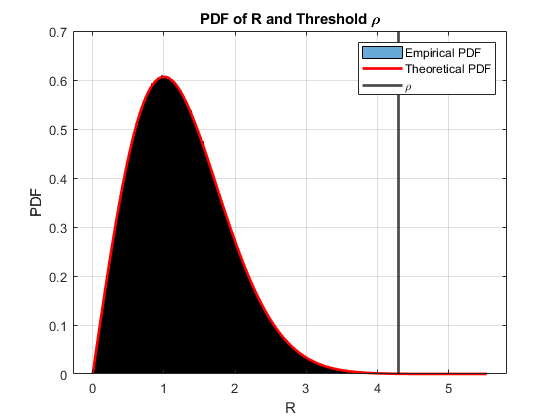
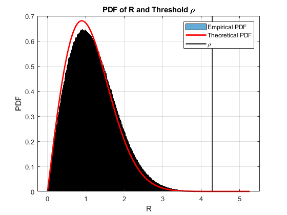
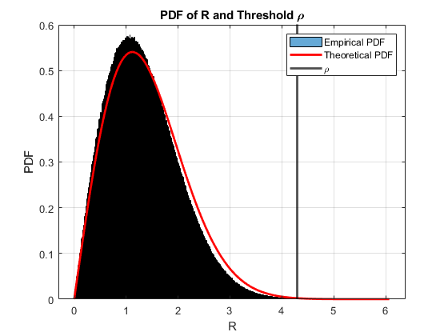

clc; clear; close all;
function P_R_greater_rho = P_R_greater_rho_(rho, sigma2)
P_R_greater_rho = exp(-rho^2 / (2 * sigma2));
end
function rho_sigma_ratio = rho_sigma_ratio_(rho_threshold)
rho_sigma_ratio = sqrt(-2 * log(rho_threshold));
end
rho_threshold = 10^-4;
rho_sigma_ratio = rho_sigma_ratio_(10^-4);
fprintf('rho/sigma ratio: %.5f\n', rho_sigma_ratio);
function R = generateNoise(num_samples, sigma2)
n_I = randn(num_samples, 1) * sqrt(sigma2);
n_Q = randn(num_samples, 1) * sqrt(sigma2);
R = abs(n_I + 1j * n_Q);
end
function plot_pdf(R, rho, sigma2, num_samples)
figure;
histogram(R, 'Normalization', 'pdf');
hold on;
r_vals = linspace(0, max(R), num_samples);
pdf_vals = (r_vals / sigma2) .* exp(-r_vals.^2 / (2 * sigma2));
plot(r_vals, pdf_vals, 'r-', 'LineWidth', 2);
xline(rho, 'k', 'LineWidth', 2);
title('PDF of R and Threshold \rho');
xlabel('R');
ylabel('PDF');
legend('Empirical PDF', 'Theoretical PDF', '\rho');
grid on;
end
function analysis(sigma2, rho, num_samples)
R = generateNoise(num_samples, sqrt(sigma2));
plot_pdf(R, rho, sigma2, num_samples);
frac_R_greater_rho = mean(R > rho);
fprintf('Empirical fraction R > rho: %.5f\n', frac_R_greater_rho);
fprintf('Theoretical P(R > rho): %.5f\n', P_R_greater_rho_(rho, sigma2));
end
sigma2 = 1;
rho = rho_sigma_ratio * sqrt(sigma2);
num_samples = 1e7;
fprintf('\nFor sigma^2 = 1:');
analysis(sigma2, rho, num_samples);
sigma2_decreased = sigma2 * 10^(-1/10);
fprintf('\nFor decreased sigma^2 by 1 dB:');
analysis(sigma2_decreased, rho, num_samples);
sigma2_increased = sigma2 * 10^(1/10);
fprintf('\nFor increased sigma^2 by 1 dB:');
analysis(sigma2_increased, rho, num_samples);
rho/sigma ratio: 4.29193
For sigma^2 = 1:Empirical fraction R > rho: 0.00010
Theoretical P(R > rho): 0.00010
For decreased sigma^2 by 1 dB:Empirical fraction R > rho: 0.00003
Theoretical P(R > rho): 0.00001
For increased sigma^2 by 1 dB:Empirical fraction R > rho: 0.00026
Theoretical P(R > rho): 0.00066
  